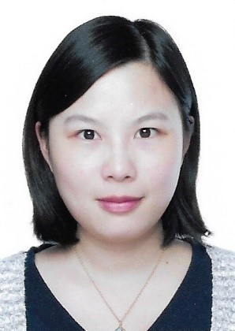

Qing Liao
PhD, Assistant Professor
廖清，博士、助理教授、硕士生导师
Department of Computer Science and Technology
Harbin Institute of Technology, Shenzhen
计算机科学与技术学院，哈尔滨工业大学深圳研究生院
 liaoqing@hit.edu.cn
liaoqing@hit.edu.cn University Town of Shenzhen, Nanshan District, Shenzhen, Guangdong, China
University Town of Shenzhen, Nanshan District, Shenzhen, Guangdong, China